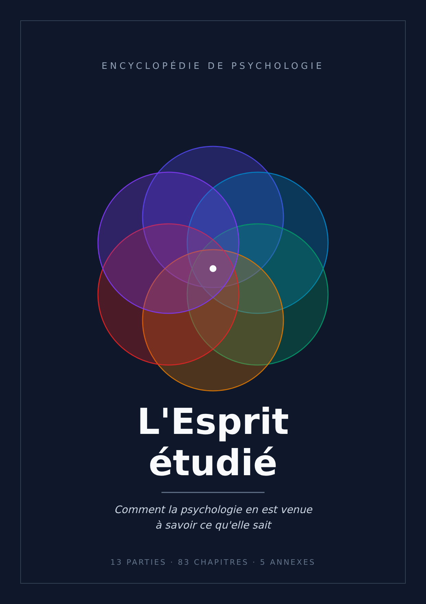

L'Esprit étudié
Comment la psychologie en est venue à savoir ce qu'elle sait
Commencer la lecturePartie I. Le problème de la connaissance de l'esprit
- Chapitre 1 — Pourquoi l'esprit est un objet difficile
- Chapitre 2 — Qu'est-ce qu'une expérience
- Chapitre 3 — Mesurer l'invisible : les construits
- Chapitre 4 — La statistique minimale indispensable
- Chapitre 5 — Comment un résultat peut être faux tout en étant vrai
- Chapitre 6 — Les autres manières de savoir
Partie II. L'esprit comme profondeur : la tradition psychanalytique
- Chapitre 7 — Avant la psychologie : l'esprit comme objet philosophique
- Chapitre 8 — L'hypothèse de l'inconscient
- Chapitre 9 — Le travail du rêve
- Chapitre 10 — Refoulement, défenses, retour du refoulé
- Chapitre 11 — Pulsions, répétition, agressivité
- Chapitre 12 — Le délire comme construction avec un noyau de vérité
- Chapitre 13 — Ce qui tient de la psychanalyse
Partie III. L'esprit comme comportement : le programme behavioriste
Partie IV. Le substrat : système nerveux et comportement
- Chapitre 20 — Le neurone comme unité de signal
- Chapitre 21 — La synapse
- Chapitre 22 — Neurotransmetteurs et psychopharmacologie
- Chapitre 23 — Architecture du cerveau
- Chapitre 24 — Comment regarder à l'intérieur d'un cerveau qui fonctionne
- Chapitre 25 — Plasticité
- Chapitre 26 — Sommeil et rythmes circadiens
- Chapitre 27 — Gènes, environnement et leur interaction
Partie V. Perception et attention
Partie VI. Mémoire et apprentissage
Partie VII. Cognition, raisonnement, erreurs systématiques
Partie VIII. Émotion et motivation
Partie IX. Développement
- Chapitre 54 — Étudier un sujet qui ne parle pas
- Chapitre 55 — Le nouveau-né compétent
- Chapitre 56 — Les stades du développement cognitif
- Chapitre 57 — L'attachement
- Chapitre 58 — Théorie de l'esprit et cognition sociale en développement
- Chapitre 59 — Le langage en développement
- Chapitre 60 — Adolescence et trajectoires au long de la vie
Partie X. Personnalité et différences individuelles
Partie XI. Psychologie sociale
Partie XII. La souffrance psychique comme banc d'essai
Partie XIII. Les trois questions qui restent
- Chapitre 78 — Conscience : pourquoi c'est un problème et pas seulement un mystère à résoudre
- Chapitre 79 — Ce que mesurent les expériences sur la conscience
- Chapitre 80 — Libre arbitre : ce que disent les données
- Chapitre 81 — Responsabilité sans libre arbitre ?
- Chapitre 82 — Identité personnelle dans le temps
- Chapitre 83 — Ce que la psychologie sait, ce qu'elle croit savoir, ce qu'elle ne sait pas